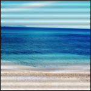
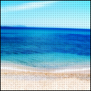
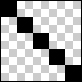
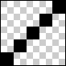
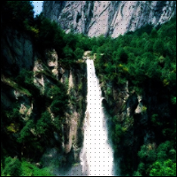

Ce tutoriel est conçu pour tous ceux (celles) qui souhaiteraient apprendre à utiliser les motifs sous Photoshop. ;)
Pour découvrir ce qu'est un motif et ce qu'entraîne son utilisation, lisez ce tutoriel qui vous sera utile pour de simples retouches comme pour de gros packs designs. :p
Aujourd'hui, vous allez apprendre à utiliser les motifs. Cette manipulation est relativement simple, et avec un peu d'entraînement, vous pourrez réaliser de belles choses.
Cool ! Mais c'est quoi, un motif ?
Un motif, c'est une image qui sera répétée par dessus un calque, pour par exemple, réaliser des diagonales ou des traits horizontaux. :)
Il y en a d'autres, mais je ne vais pas tous vous les citer. En tout, il doit y avoir une bonne dizaine de fichiers contenant des motifs prédéfinis, avec dans chacun de ces fichiers, environs 15 à 20 motifs... Mais vous pouvez créer les vôtres. Et c'est plus à cela que l'on va s'intéresser ! :o Mais... Je rassure les plus paresseux, on peut importer des motifs. Du moins, leur création est très simple... :-°
Un exemple, *toutoutou*, un exemple, *toutoutou* !
Voilà, je vous ai fait quelques exemples d'images avant et après ajout de motifs.
Prenons cette image :
Quelques exemples, avant et après ajout de motifs
Avant :
Après :

Exemple de motif utilisé sur le fond d'un design :
Vous voyez que l'on peut arriver à faire des choses qui, certes, ne plairont peut-être pas à tout le monde :p . Mais cette technique va vous être utile à un moment ou à un autre, croyez moi ^^ .
Comment éviter que cette erreur se reproduise ? :(
Pour cela, j'utilise une méthode simple. Je tâtonne. Si vous voyez que vos motifs ne "concordent" pas, rapetissez l'image et retentez le coup jusqu'à l'obtention du bon rendu.
Pour obtenir des scanlines moyennement serrées, créez un document de 5 * 5 pixels. Si, par la suite, vous souhaitez agrandir l'espace entre chaque diagonale, augmentez la taille du document. Lorsque le document est créé, maintenez CTRL (Contrôle) et "+" (pavé numérique) jusqu'à un zoom maximal (x 1600) ; prenez l'outil crayon de taille 1 pixel.
Remplissez ensuite une diagonale de ce carré, comme ceci :

ou

Le sens de la diagonale, c'est le sens de vos futurs scanlines.
Aperçu du futur rendu :
Et comment j'enregistre le motif, moi ?
Rien de plus simple : il suffit de cliquer sur "Édition" dans le menu du haut, puis "Utiliser comme motif...". Votre motif se trouvera alors dans la liste des motifs actuellement utilisés.
Traits horizontaux
Créez un document de 1 * 2 pixels. De la même manière, zoomez au maximum avec CTRL et "+". Remplissez un pixel sur les deux existants, comme ceci :
ou
La position du pixel noir n'est pas réellement importante. Enregistrez le motif avec "Édition", puis "Utiliser comme motif...".
Aperçu du futur rendu :
Points
Créez un document de 3 * 3 pixels. Encore une fois, si vous souhaitez que les espaces entre les futurs points soient plus ou moins grands, modifiez la taille du document. Encore une fois, zoomez au maximum avec CTRL et "+". Remplissez le pixel du centre, comme ceci :
Enregistrez ensuite le motif avec "Édition" et "Utiliser comme motif...".
Et une fois le motif créé, comment l'applique-t-on sur notre image ?
J'allais y venir.
Héhé. Alors, créez un nouveau document avec une photo, par exemple, copiez-collez celle-ci :
Dans la fenêtre des calques (si vous ne la voyez pas, cliquez sur "Fenêtres" (en haut) puis sur "Calques"), faites un clic droit sur le calque où se trouve l'image à motifisitionner (notez le superbe mot ^^ ), puis cliquez sur "Options de Fusion...".
Sélectionnez ensuite dans le petit menu (en cliquant sur la flèche noire) le motif souhaité. Par exemple, prenons les points, et mettons-les en opacité35 %.
Voici le résultat :

Maintenant que vous comprenez le principe, je pense que je vais vous laisser vous débrouiller seul(e)s ^^ .
Bon : allez, deux - trois explications pour la route :
baissez l'opacité pour éviter un résultat trop visible
ne touchez pas à l'échelle : du moins, laissez là à 100 %, car sinon, elle risque de réduire la qualité de vos motifs.
Votre apprentissage des motifs est désormais terminé : vous pouvez encore découvrir pas mal de choses par vous-mêmes, vous avez désormais de bonnes bases bien fondées :-° .
Pensez toujours à ce qui suit
Créez votre document, prenez le crayon de 1 pixel avec la couleur de votre choix, et appliquez le motif souhaité en "miniature". Pour faciliter la création du motif, zoomez au maximum avec CTRL et "+".
La taille de votre document pour la création du motif, pour éviter les "bavures".
Réfléchissez avant d'enregistrer votre motif ("Édition" puis "Utiliser comme motif...") pour que le résultat soit impeccable.
Allez dans les options de fusion du calque où vous voulez appliquer le motif, et rendez-vous dans la rubrique "Incrustation de motifs...".
Réglez l'opacité après avoir sélectionné votre motif.
Ne touchez pas à l'échelle, elle rend la qualité de votre motif médiocre.
Voilà : j'ai adoré faire ce tutoriel et j'espère en faire d'autres prochainement. J'espère aussi que les motifs n'ont plus de secret pour vous, et que vous avez apprécié ce tuto :) .
Je vous souhaite à tous et à toutes une bonne continuation. ;)
{kind=link}
{kind=link}
{kind=link}
{kind=link}
{kind=link}